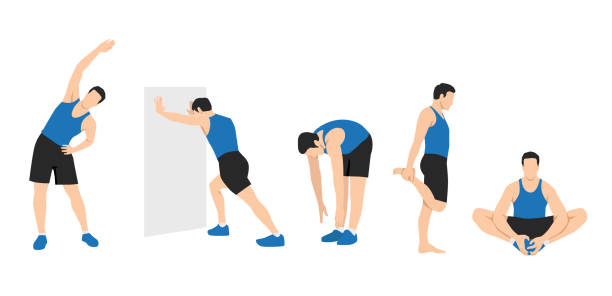
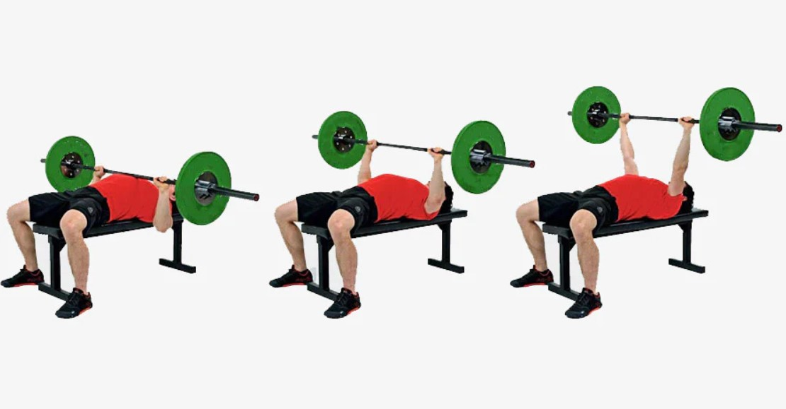
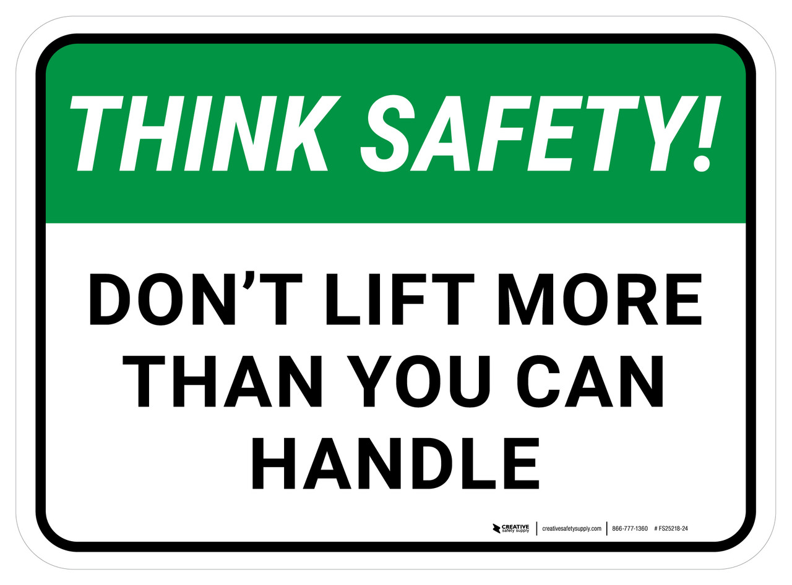
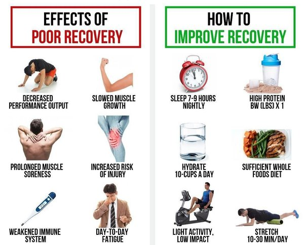

Weightlifting can be dangerous in numerous amounts of ways. The best thing you can do to avoid injury is to take the right precautions before you start. On this page, I will explain some of the best things that you can do for yourself to avoid injury as much as possible when weightlifting.
#1. Warm-Up Properly

Image of person warming up.
Begin your workout with a dynamic warm-up routine that targets the muscles and joints you'll be using during your weightlifting session. Include exercises such as bodyweight squats, lunges, arm circles, shoulder rotations, and light cardio to increase blood flow, elevate heart rate, and improve flexibility and mobility. Gradually increase the intensity of your warm-up to prepare your body for the heavier lifting to come.
It is also a great Idea to Stretch properly before and after your workout to help warm-up your body further.
#2. Use Proper Form and Technique

Image of person using proper form.
Prioritize proper form and technique over lifting heavy weights. Focus on executing each exercise with control, precision, and full range of motion. Engage the appropriate muscles throughout each movement and avoid using momentum or compensatory movements to lift the weight. If you're unsure about proper form, seek guidance from a qualified fitness professional or coach, or consult reputable resources such as instructional videos or exercise tutorials.
#3. Progress Gradually

Think safety image.
Avoid the temptation to lift weights that are too heavy for your current strength level, as this increases the risk of injury. Gradually increase the weight, sets, and repetitions over time as your strength and technique improve. Listen to your body and pay attention to signs of fatigue, discomfort, or pain. If something doesn't feel right, don't push through it—modify the exercise, reduce the weight, or take a break as needed.
#4. Incorporate Recovery and Rest

Image of bad and good effects of recovery.
Allow adequate time for recovery between weightlifting sessions to give your muscles, joints, and nervous system time to repair and adapt to the stress of exercise.Include rest days in your workout schedule to prevent overtraining and reduce the risk of overuse injuries. Prioritize quality sleep, hydration, nutrition, and stress management to support your body's recovery processes and optimize performance.
#5. Listen to Your Body
Image of person holding shoulder.
Pay attention to how your body feels during and after weightlifting sessions. If you experience persistent pain, discomfort, or unusual sensations, it may be a sign of an underlying issue that needs attention. Don't ignore warning signs of potential injury. If you suspect you've injured yourself, stop the activity immediately and seek medical evaluation if necessary. Be mindful of your limitations and avoid pushing yourself beyond your capabilities, especially when fatigued or under excessive stress. Here is another page that focuses on the proper equipment and gear you may need when starting your weightlifting journey to avoid injury.
By incorporating these practices into your weightlifting routine, you can help reduce the risk of injury and create a safe and effective training environment for long-term progress and success.